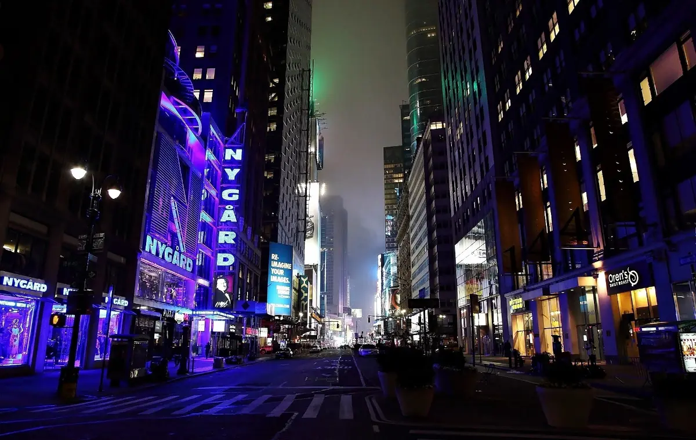

New Year's Eve in New York
The ball drop is free, famous and genuinely demanding: hours of standing, security screening and no easy way out. Deciding whether that trade is worth it for you is the whole planning task. Here is what each version of the night actually involves.
Checked 2 November 2026. Prices, opening hours and transport details were verified against official sources. Things change — confirm before you book. How we check.
What the ball drop really asks of you
The Times Square celebration is not a show with a start time. It is a viewing pen you enter in the afternoon and stay in until midnight, with security screening on the way in and no re-entry if you leave.
The ball drops at 11:59pm on 31 December, and the event is free with no tickets. In practice that means first come, first served: the earlier you arrive, the closer you get, and the longer you stand. Most people aim for early afternoon, which gives six or more hours on your feet in winter temperatures. Security screening is thorough — large bags and alcohol are not allowed — and once you are inside the viewing area, leaving usually means not getting back in.
There are no seats, few toilets and limited food inside the pens, so treat the evening as an expedition: eat properly beforehand, carry only what you can keep on your body, and decide in advance where you will go afterwards. The official event information and the current entry rules are published by Times Square NYC; check them in the week before, because the arrangements change with the weather and with security advice.

Three ways to spend midnight
The ball drop is one option, not the only one. Pick the version that matches how much standing and cold you are prepared to trade for the atmosphere.
Inside the pens
Free, no tickets, and the full Times Square experience: screens, performances, countdown and the ball. Arrive in the early afternoon, pass security, and accept that you will stand for hours in the cold.
A seat with a view
Bars, restaurants and hotels around Midtown sell New Year's Eve packages with a table, a meal and a screen. It costs money and is booked months ahead, but it removes the standing, the cold and the exit problem.
Somewhere else entirely
A neighbourhood restaurant, a Brooklyn bar or a friend's apartment is how most people who live here see midnight. New York is a city of small celebrations on 31 December, and the atmosphere does not depend on Times Square.
Planning the night
Decide between the pens and a booking first. That choice determines when you eat, where you stand and how you get home.
- Choose your version of the night before you book anything: viewing pens, a paid table, or a low-key local celebration. Each has a different cost in money, comfort and time.
- If you want the pens, arrive in the early afternoon and expect security screening. Bring ID, wear layers and keep bags small; alcohol and large bags are not allowed.
- Eat a proper meal before you go in, and carry water and a snack you can keep in a pocket. Food and toilets inside the viewing areas are limited.
- Plan your exit before midnight. Know which subway lines you will use, which station entrances are open, and how far you are willing to walk to avoid the worst of the crowd.
- If you are booking a table or a hotel package, reserve four to six months ahead and read the terms: many packages are prepaid and non-refundable.
How locals see midnight
-
01
Most people stay out of Times Square
The ball drop is a once-in-a-lifetime thing for visitors and a thing to avoid for most residents. That is not cynicism; it is a realistic guide to how much of the city experiences 31 December.
-
02
Book the ordinary restaurant
Neighbourhood restaurants outside Midtown often run a special menu without the Times Square markup. Book ahead, expect a set menu, and you get a table, a meal and midnight without the standing.
-
03
Use the first hours of January
New Year's Day is quiet in the morning and the perfect time for a park walk or a late breakfast. Museums and attractions return to normal hours within a day or two, and hotels empty out.
Before and after
Christmas week runs straight into New Year's Eve, and January brings the cheapest month of the year.

New Year's Eve questions
Do I need tickets for the Times Square ball drop?
No. The event is free and unticketed. Admission is first come, first served, so the earlier you arrive the better your position. Expect security screening and be prepared to stand for several hours.
How early should I arrive?
Early afternoon is the practical answer. The viewing areas fill through the day, and arriving after dark usually means watching from further back or not getting in at all. Bring layers for the wait.
Can I bring a bag or alcohol?
Large bags and alcohol are not allowed, and all entrants pass through security screening. Carry only what you need — phone, ID, a card and a little cash — and wear the warmest layers you have.
What time is the ball drop?
The ball drops at 11:59pm on 31 December, with the countdown to midnight. The surrounding programme runs through the evening, but the atmosphere builds from late afternoon as the pens fill.
Are there calmer alternatives?
Yes. A booked table at a Midtown bar or restaurant, a neighbourhood restaurant away from Times Square, or a small celebration in Brooklyn all mark midnight without the standing and the crush. Many hotels and venues sell packages, usually booked months in advance.